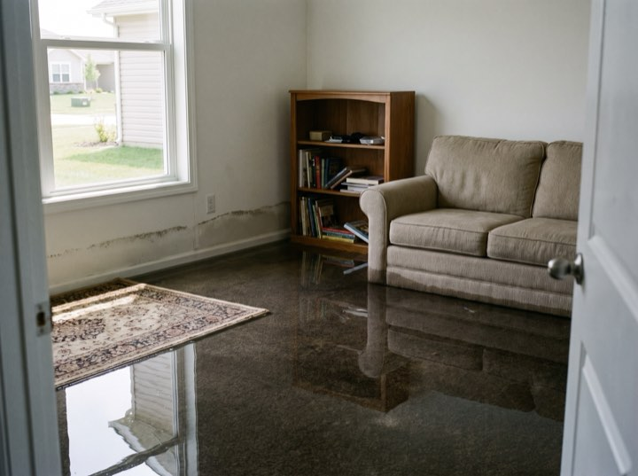
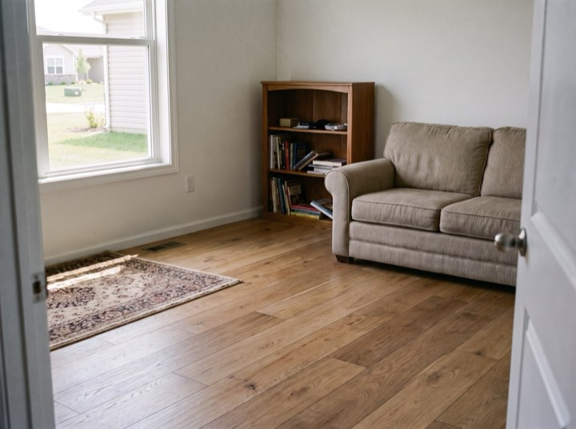
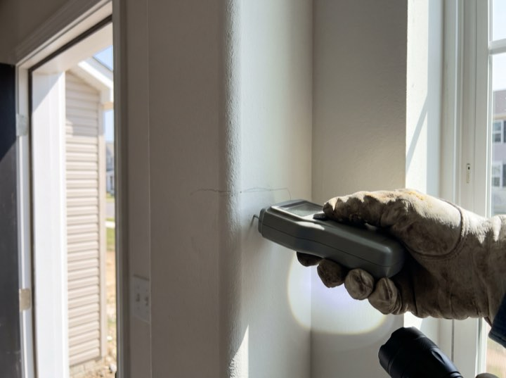
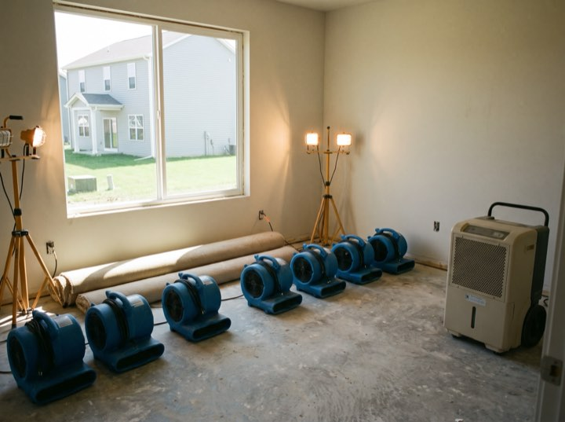
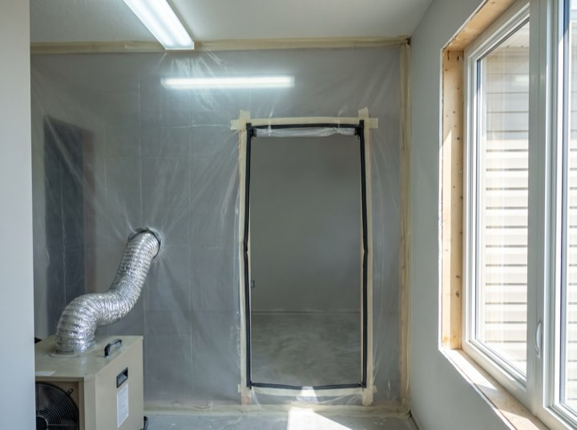

Water · Fire · Mould · 24/7
Emergency water, fire and mould restoration. We document before we touch anything, meet your adjuster on site, and produce the moisture readings when the scope gets argued, which it does.
Services
Every hour water sits, the damage and the cost compound. This is why we answer at 3am.
Truck-mounted extraction, commercial air movers and moisture mapping so we can prove the structure is genuinely dry, not just dry-feeling.
Soot removal, odour neutralisation and contents cleaning. Smoke damage travels far further than the fire itself.
Containment, HEPA filtration and post-remediation verification by an independent hygienist so the clearance means something.
Board-up, tarping and full structural drying. We mobilise extra crews before a forecast storm rather than after it.
Results
“Pipe went at two in the morning. Claymore had extraction running before four and dealt with the insurer entirely. I signed two forms in the whole process.”
Gregory N. · Burst supply line, 2,400 sq ft
Certified and approved
Process
Disaster and insurer at once is more than most people can carry. We handle the second one and keep you copied on everything.
A person answers. We dispatch immediately and give you an arrival window measured in minutes.
Stop the source, extract standing water, tarp or board up. The first hours decide the size of the claim.
Dated photographs and a full moisture log, submitted in your carrier's format, with one of our people standing beside the adjuster when they scope it.
Daily readings until verified dry, then reconstruction. You get the log, so nothing is disputed months later.
With the adjuster
Moisture logged at the same points every day until the structure reads dry, and the drying plan the adjuster signs off against.





Do not wait for business hours. Every hour standing water sits, the cost and the damage climb. Crews are on call this minute.
We work with all major insurers and bill direct. Free emergency assessment.